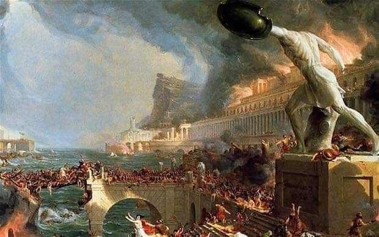
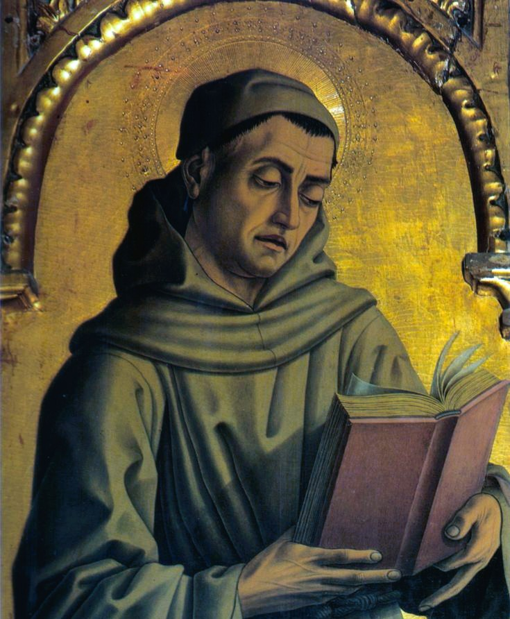

Nearly a thousand years spent working out one central task: how far
can reason go in service of faith, and where must revelation take
over?
Introduction
Medieval philosophy spans roughly a thousand years, from the late
transformation of the Roman world and the fall of the Western Roman
Empire in the 5th century to the intellectual changes associated with
the Renaissance in the 15th century. Far from being an age of
intellectual stagnation, the medieval period produced sophisticated work
in logic,
metaphysics,
epistemology,
ethics,political thought,
and natural theology. In Latin Christian Europe, philosophy was often
pursued alongside theology, but it was not simply reduced to religious
doctrine: medieval thinkers developed rigorous methods of argument for
examining what human reason could establish independently and what
depended upon divine revelation. Its most persistent question was
therefore the relationship between
faith and reason—whether philosophical inquiry could
demonstrate truths about reality and God, and how revealed beliefs
should be understood when they appeared difficult to reconcile with
philosophical argument.
Medieval philosophy was also an international intellectual enterprise
rather than an exclusively Western European phenomenon. Christian,
Jewish, and
Islamic thinkers preserved,
translated, criticized, and transformed the philosophical inheritance of
ancient Greece and Rome. The gradual
recovery of Aristotle's works in the Latin West, much of it through
translation networks involving Arabic and Hebrew scholarship,
dramatically expanded the philosophical resources available to medieval
universities. Plato,
Aristotle, Plotinus,
Augustine,
Avicenna,
Averroes, Maimonides, and many other
thinkers became participants in a long conversation about being,
causation, the soul, knowledge, language, and God. Medieval philosophy
thus connected the ancient world with the Renaissance and early modern
periods while producing philosophical systems that remain subjects of
serious study today.
This page traces the development of medieval philosophy through nine
broad chapters: the fragile intellectual survival and revival of the
early medieval centuries, the
Problem of Universals that became one of the defining
metaphysical and logical debates of the 11th and 12th centuries, and the
Golden Age of Scholasticism in the 12th and 13th
centuries. During these periods, philosophers developed increasingly
systematic methods for reconciling inherited Greek philosophy with
Christian theology while also asking independent questions about logic,
metaphysics, ethics, language, and the nature of human knowledge.
Thinkers such as Augustine of Hippo, Anselm of Canterbury, Peter
Abelard, Thomas Aquinas, Bonaventure, and John Duns Scotus represent
different stages in this intellectual development.
Medieval philosophy was therefore not merely an era of preserving
ancient ideas. Its thinkers transformed the traditions they inherited by
introducing new distinctions, argumentative methods, and conceptual
frameworks. Scholastic disputation developed highly structured ways of
presenting objections and answers; debates about universals forced
philosophers to clarify the relationship between language, thought, and
reality; and medieval natural theology produced some of history's most
influential arguments concerning the existence and attributes of God.
Later thinkers, including William of Ockham, would challenge aspects of
the great scholastic syntheses and help redirect philosophical attention
toward language, logic, individuality, and the limits of metaphysical
explanation. The result was a complex intellectual tradition whose
influence extended into Renaissance philosophy, early modern science,
modern metaphysics, and contemporary debates about reason and religious
belief.
Timeline at a Glance
476 CE
Fall of the Western Roman Empire
354–430 CE
Life of Augustine of Hippo
late 8th–9th century
Carolingian Renaissance under Charlemagne
1033–1109 CE
Life of Anselm of Canterbury; the Ontological Argument
1225–1274 CE
Life of Thomas Aquinas; Summa Theologica
1266–1308 CE
Life of John Duns Scotus
🏺 Europe After Rome

The collapse of Roman administrative and educational structures
scattered surviving learning into isolated monasteries.
The fall of the Western Roman Empire in 476 CE did not simply replace
one political ruler with another. Across much of Western Europe, Roman
administrative networks, educational institutions, urban economies, and
systems of long-distance communication were profoundly transformed. The
classical philosophical tradition did not disappear completely, but
access to many Greek and Roman texts became increasingly limited in the
Latin-speaking West, where knowledge of Greek itself grew rare.
Important works survived unevenly through libraries, schools,
translations, excerpts, and commentaries, meaning that early medieval
philosophers often worked with a much narrower selection of ancient
texts than scholars in the Greek- speaking Byzantine world or the later
Islamic world.
What learning survived in Western Europe was preserved largely through
Christian institutions, especially monasteries and cathedral schools.
Monastic communities copied manuscripts, maintained libraries, educated
clergy, and transmitted elements of the classical intellectual
inheritance across generations. Figures such as Augustine and the late
antique scholar Boethius became especially important because their
writings remained available and offered frameworks through which
Christian thinkers could engage philosophical questions. Boethius's
logical works and commentaries, in particular, helped transmit parts of
the ancient logical tradition and would later contribute to the
development of medieval dialectic and the debate over universals.
This does not mean that philosophy during the early Middle Ages was
simply controlled by theology or incapable of independent reasoning.
Rather, the institutional setting of philosophical inquiry was often
religious, and many of the period's most important philosophical
problems emerged directly from theological questions. How can God be
known? What is the nature of the human soul? Does human freedom coexist
with divine foreknowledge? What makes something good or evil? Can reason
establish universal truths? Such questions required philosophers to
develop theories of knowledge, metaphysics, causation, language, and
logic with consequences extending beyond theology itself.
It was within this changing intellectual world that medieval
philosophy's central project gradually took shape: determining how faith
and reason should cooperate without being confused with one another.
Some thinkers emphasized the dependence of human understanding upon
divine illumination, while others increasingly stressed the natural
powers of the intellect and the possibility of demonstrating
philosophical truths from experience and rational argument. The recovery
of additional ancient texts, the expansion of translation networks, and
the eventual rise of universities transformed this debate into one of
the most systematic philosophical traditions in European history.
1️⃣ Early Medieval Philosophy (5th–11th Centuries)
Augustine and the First Revivals
Augustine of Hippo shaped Western Christian thought for a thousand
years, blending Neoplatonic philosophy with Christian doctrine.
The single most influential figure standing at the beginning of the
medieval Latin tradition is
Augustine of Hippo (354–430 CE).
Writing during the final transformation of the Roman world, Augustine
developed a philosophical theology that drew deeply upon Platonism and
the Neoplatonic tradition associated with Plotinus while radically
reshaping those ideas within a Christian framework. His writings
addressed the nature of God, truth, time, memory, the human will, evil,
and the soul. For Augustine, philosophical reasoning could assist the
believer by clarifying what faith sought to understand, although human
knowledge ultimately depended upon God. The phrase
faith seeking understanding, later closely associated
with Anselm, nevertheless expresses an intellectual orientation strongly
characteristic of the Augustinian tradition: belief and rational inquiry
were not enemies but could form stages within a deeper search for truth.
Augustine's influence extended far beyond his explicit theological
arguments. His account of the mind made inward reflection central to the
search for knowledge, while his analysis of evil rejected the idea that
evil is an independent substance, describing it instead as a privation
or corruption of the good. His reflections on time in the
Confessions examined the relationship between memory,
expectation, and present experience in ways that continue to attract
philosophical attention. At the same time, his adaptation of Platonic
and Neoplatonic ideas encouraged later medieval thinkers to understand
eternal truths in relation to the divine intellect and to debate whether
certain knowledge requires a special form of
divine illumination.
A significant, though geographically limited, intellectual revival
occurred during the Carolingian Renaissance of the late
8th and 9th centuries under Charlemagne and his successors. Educational
reforms promoted literacy, the study of grammar and logic, and the
correction and copying of biblical and classical manuscripts. The
revival did not restore the full intellectual world of ancient Rome, but
it strengthened networks of schools and scriptoria and helped create
conditions for later philosophical development. Scholars such as Alcuin
played important educational roles, while John Scottus Eriugena (c.
810–877 CE) produced one of the period's most ambitious philosophical
syntheses, drawing upon Christian and Greek Neoplatonic sources to
explore the relationship between God, creation, and the hierarchy of
being.
By the 11th century, philosophical discussion increasingly emphasized
dialectic—the disciplined use of logical argument,
definition, objection, and response. This development marked the
beginnings of what would become Scholasticism, a method of inquiry
characterized by careful conceptual distinctions and systematic debate.
Thinkers began to examine inherited authorities not merely by repeating
them but by comparing apparently conflicting claims and attempting
rational resolutions. It was in this environment that questions
inherited from ancient logic and metaphysics acquired renewed urgency,
especially the question of whether general concepts correspond to real
features of the world. That question, known as the
Problem of Universals, would become one of the defining
philosophical controversies of the medieval period.
2️⃣ The Problem of Universals (11th–12th Centuries)
Do Universal Concepts Really Exist?
Anselm of Canterbury's Ontological Argument attempted to prove God's
existence from reason alone.
The Problem of Universals asks a deceptively simple
question: when we use a general term such as "human," "animal,"
"redness," or "triangularity," what, if anything, corresponds to that
general concept in reality? Individual human beings clearly exist, but
does humanity itself exist independently of particular
people? The problem connected metaphysics with logic, language, and
epistemology. If only individual things exist, how can the mind form
universal knowledge? If universal natures are real, where and how do
they exist? Medieval philosophers inherited versions of these questions
from Plato, Aristotle, Porphyry, Boethius, and the late antique logical
tradition, then developed them into increasingly precise debates about
abstraction, predication, and the relationship between thought and
reality.
The traditional labels realism,
nominalism, and conceptualism provide
a useful introduction, although the historical positions of medieval
thinkers were often more complicated than these categories suggest.
Realists generally held that universality has a genuine foundation in
reality rather than being merely an arbitrary feature of language.
Nominalist tendencies, by contrast, emphasized the primacy of individual
things and questioned whether universals exist as entities outside the
mind. Peter Abelard (1079–1142 CE) developed an influential analysis of
universal terms and concepts that resisted both a simple Platonic
realism and the idea that universals are nothing more than meaningless
sounds. The central issue was not simply whether a word exists, but how
language can genuinely apply to many distinct individuals and how
universal knowledge is possible.
The debate mattered because questions about universals reached into
Christian theology and metaphysics. The concepts of divine ideas, the
Trinity, human nature, and the relation between individual creatures and
their common kinds could all be affected by one's account of
universality. Medieval thinkers therefore developed increasingly
sophisticated theories explaining how the intellect abstracts general
concepts from particular experiences and whether those concepts
correspond to shared natures in the things themselves. The Problem of
Universals became a training ground for the precision that later
characterized Scholastic philosophy, forcing thinkers to distinguish
carefully between words, concepts, individual objects, common natures,
and the different senses in which something may be said to exist.
Anselm of Canterbury (c. 1033–1109 CE) is remembered above all for the
Ontological Argument, one of the most famous attempts
in the history of philosophy to reason toward God's existence from the
concept of God. In the Proslogion, Anselm describes God as
"that than which nothing greater can be conceived" and argues that such
a being cannot exist merely in the understanding if existence in reality
represents a greater mode of being. The argument immediately provoked
criticism, most famously from the monk Gaunilo, and has continued to be
debated by philosophers from Thomas Aquinas to René Descartes, Immanuel
Kant, and contemporary analytic philosophers. Its historical importance
lies not only in whether the argument succeeds, but in the confidence it
expresses that logical and conceptual analysis can illuminate questions
traditionally associated with faith.
The philosophical culture of the 11th and 12th centuries increasingly
made such arguments possible. Cathedral schools and expanding centers of
learning created communities in which teachers and students could debate
disputed questions through organized reasoning. Abelard's method of
setting apparently conflicting authorities alongside one another and
demanding careful analysis became emblematic of this development.
Medieval philosophy was becoming less dependent on isolated commentary
and increasingly systematic in its methods, preparing the way for the
university culture and large-scale philosophical syntheses of the
following centuries.
3️⃣ The Golden Age of Scholasticism (12th–13th Centuries)
Thomas Aquinas and the Synthesis of Reason and Faith
Thomas Aquinas's Summa Theologica remains the most ambitious synthesis
of Aristotelian philosophy and Christian theology.
The 12th and 13th centuries mark the high point of
Scholasticism, a philosophical and educational method
characterized by logical analysis, precise distinctions, and formal
disputation. One of the decisive developments of this period was the
recovery of a much fuller body of Aristotle's writings in the Latin
West. Works on logic had long been known, but translations of
Aristotle's metaphysics, natural philosophy, psychology, and ethics
dramatically expanded the philosophical landscape. These texts reached
Latin scholars through complex translation networks involving Greek,
Arabic, and Hebrew intellectual traditions, while the commentaries of
Islamic philosophers such as Avicenna and Averroes became major sources
of interpretation and debate. The growth of universities in centers
including Paris, Bologna, and Oxford created institutions capable of
sustaining continuous philosophical argument on an unprecedented scale.
Thomas Aquinas (c. 1225–1274 CE) stands as the most influential
philosopher of this period and one of the major figures in the history
of Christian philosophy. Drawing upon Aristotle while also engaging
Augustine,
Avicenna,
Averroes, and other traditions, Aquinas
developed an extensive account of metaphysics, knowledge, ethics,
natural law, and theology. His Summa Theologica presents
questions through a characteristic scholastic structure: objections are
first stated, an opposing authority or principle is introduced, Aquinas
gives his own answer, and the original objections are then addressed.
This method demonstrates that Scholasticism was not merely a collection
of conclusions but a disciplined procedure for testing arguments and
resolving apparent contradictions.
Central to Aquinas's philosophical project was the conviction that
reason and revelation, properly understood, cannot
ultimately contradict one another because truth has a single divine
source. He distinguished between truths that human reason can
investigate from the natural world and truths that exceed the unaided
powers of the human intellect and therefore require revelation.
Aquinas's famous Five Ways are arguments that begin
with features of the world—such as change, causation, contingency,
degrees of perfection, and natural order—and reason toward a first
explanatory principle identified with God. These arguments are not
versions of the Ontological Argument: they proceed from effects and
features of experienced reality rather than attempting to infer
existence solely from the definition of God.
Aquinas's synthesis was influential precisely because it did not simply
accept every Aristotelian doctrine unchanged. Medieval Christian
thinkers had to confront tensions between ancient philosophy and
theological commitments concerning creation, divine providence, the
immortality of the individual soul, and the nature of God. Aquinas
developed his own account of being, causation, essence, existence, and
analogy in response to these problems. His work also established a
powerful account of
natural law, according to which moral reasoning can
identify principles rooted in human nature and the intelligible order of
reality. The resulting system became foundational for later Catholic
philosophy while remaining a subject of philosophical criticism and
debate.
Scholasticism's Golden Age was not dominated by Aquinas alone.
Bonaventure (c. 1217–1274 CE), a major Franciscan thinker, represented a
powerful Augustinian and Neoplatonic current that placed greater
emphasis on divine illumination, the exemplary role of divine ideas, and
the soul's ascent toward God. John Duns Scotus (c. 1266–1308 CE), later
known as the "Subtle Doctor," introduced highly influential distinctions
in metaphysics, epistemology, and theology. He is especially associated
with
haecceity, often translated as "thisness," a concept
used to explain the individuality of particular beings, and with his
arguments concerning the univocal use of certain fundamental concepts
such as being. His work illustrates how late medieval philosophy
increasingly pursued conceptual precision even while questioning aspects
of earlier scholastic syntheses.
The achievements of high Scholasticism therefore created both a
culmination and a new set of tensions within medieval philosophy. The
attempt to build comprehensive systems encouraged increasingly technical
debates about universals, individuation, divine freedom, language, and
the limits of human knowledge. In the generations after Aquinas and
Scotus, philosophers such as William of Ockham would challenge the
multiplication of metaphysical entities and develop new approaches to
logic and universals. These later developments did not simply end
medieval philosophy; they transformed its questions and methods, helping
prepare the intellectual transition toward Renaissance and early modern
thought.
4️⃣ The Rise of Universities and the Scholastic Method
How Medieval Universities Changed Philosophy
One of the most important transformations in medieval intellectual
history was the rise of the university. During the 12th
and 13th centuries, earlier cathedral and urban schools developed into
more stable institutions of higher learning in cities such as Bologna,
Paris, and Oxford. These institutions brought teachers and students
together from different regions of Europe and created a professional
environment in which philosophical questions could be studied
continuously rather than only within isolated monasteries or individual
religious communities. By the 13th century, the universities of Paris
and Oxford had become major centers of philosophical activity, helping
establish the institutional foundations of Scholastic philosophy.
Medieval university education was generally organized into faculties.
The
Faculty of Arts provided training in subjects that
included grammar, rhetoric, logic, and eventually large parts of
Aristotelian natural philosophy and metaphysics. Students who continued
their education could enter higher faculties such as theology, law, or
medicine. This structure encouraged philosophy to develop its own
technical vocabulary and methods while remaining connected to other
disciplines. Philosophy was therefore not simply a collection of
inherited doctrines; it became an organized field of teaching,
commentary, examination, and public intellectual debate.
The method most strongly associated with this environment is
Scholasticism. Scholasticism was not a single
philosophical doctrine shared by all medieval thinkers but a disciplined
method of inquiry. Philosophers examined a question, identified
competing arguments, defined important terms, distinguished different
senses of a concept, and attempted to resolve contradictions through
logical analysis. A typical scholastic text might begin by presenting
objections to a proposed conclusion, then introduce an opposing
authority, develop a detailed answer, and finally respond individually
to the earlier objections. This argumentative structure trained
philosophers to treat disagreement as something requiring analysis
rather than simply the rejection of opposing views.
The practice of disputation became especially
important. Masters and students debated questions concerning logic,
metaphysics, theology, ethics, and natural philosophy. A disputed
question could ask, for example, whether the human intellect requires
divine illumination, whether the will is freer than the intellect, or
whether the world could have existed eternally. Such debates demanded
careful reasoning because an answer had to address not only a preferred
conclusion but also the strongest objections against it. The scholastic
method therefore contributed to the development of conceptual precision
and argumentative rigor that would influence European philosophy for
centuries.
The university system also created a shared intellectual culture. Texts
circulated more widely, commentaries responded directly to earlier
commentaries, and philosophical debates could continue across
generations. Dominican and Franciscan religious orders established their
own educational networks and became deeply involved in university life,
producing thinkers such as Albert the Great, Thomas Aquinas,
Bonaventure, John Duns Scotus, and William of Ockham. The rise of
universities thus explains why medieval philosophy after the 12th
century became more specialized, systematic, and technically
sophisticated than much of the philosophical work produced in the
earlier medieval West.
5️⃣ Aristotle Returns to the Latin West
The Rediscovery That Transformed Medieval Thought
The gradual arrival of Aristotle's complete philosophical works
transformed logic, metaphysics, natural philosophy, and medieval
university education.
The intellectual transformation of high medieval philosophy cannot be
understood without the recovery of a much larger body of
Aristotle's works. Early medieval Latin
scholars possessed only a limited selection of ancient philosophical
texts, particularly parts of Aristotle's logical writings. From the 12th
century onward, however, translators made increasingly large portions of
Aristotle's corpus available in Latin, including works on logic, natural
philosophy, psychology, metaphysics, and ethics. This influx
dramatically changed the questions medieval philosophers were able to
ask and the conceptual tools available for answering them.
These translations emerged from a broad network of intellectual exchange
connecting the Latin West with Greek, Arabic, Jewish, and Byzantine
traditions. Scholars working in regions such as Spain and Sicily
translated philosophical and scientific works that had circulated in
Arabic as well as texts preserved in Greek. Medieval Christian
philosophers therefore did not encounter Aristotle in isolation. They
also encountered interpretations by major Islamic philosophers,
particularly Avicenna and Averroes, whose commentaries and metaphysical
systems became important participants in Latin philosophical debates.
Jewish thinkers, including Maimonides, likewise contributed to the wider
medieval conversation about reason, revelation, and the interpretation
of inherited philosophical traditions.
Aristotle offered medieval philosophers an extraordinarily comprehensive
account of reality. His philosophy included theories of substance and
causation, the relationship between matter and form, the nature of
motion, the structure of living organisms, the powers of the soul,
ethics, politics, and logic. His concept of the
Four Causes—material, formal, efficient, and
final—provided a powerful framework for explaining why things are what
they are and how natural processes occur. Medieval philosophers adopted,
modified, and criticized these concepts while attempting to reconcile
them with Christian doctrines concerning creation, divine providence,
miracles, and the immortality of the individual soul.
Aristotle's influence was not immediately accepted without controversy.
Certain Aristotelian propositions appeared difficult to reconcile with
Christian doctrine, particularly questions concerning the eternity of
the world and the relationship between the human intellect and
individual persons. Church authorities and universities sometimes placed
restrictions on the teaching of particular works or interpretations. Yet
these controversies did not prevent Aristotelian philosophy from
becoming central to medieval education. Instead, they encouraged
philosophers to examine more carefully where philosophical demonstration
ended and theological revelation began.
By the 13th century, the Arts Faculties of major universities had become
deeply shaped by Aristotelian texts, while theologians increasingly
engaged Aristotle as a major philosophical authority. Albert the Great
and Thomas Aquinas were among the most important figures in adapting
Aristotelian philosophy to a Christian intellectual framework, although
their interpretations differed from those of other thinkers. The
recovery of Aristotle therefore did not produce a simple return to
ancient philosophy. It generated new forms of Aristotelianism and forced
medieval thinkers to develop original solutions to problems that neither
Aristotle nor the Christian tradition had previously addressed in quite
the same way.
6️⃣ Bonaventure, Duns Scotus, and Franciscan Philosophy
Alternative Paths Within Scholasticism

Franciscan philosophers developed major alternatives to the Thomistic
synthesis, emphasizing divine freedom, individuality, and the limits
of purely Aristotelian explanation.
The Golden Age of Scholasticism was never a single, unified
philosophical movement. Alongside the Dominican tradition associated
with Albert the Great and Thomas Aquinas, the
Franciscan tradition developed distinctive approaches
shaped more strongly by Augustinian and Neoplatonic influences.
Franciscan thinkers were generally willing to engage the newly available
Aristotelian philosophy, but many resisted the idea that Aristotle
should provide the final framework for understanding God, the soul, and
the structure of reality. Their work produced some of the most
influential alternatives within medieval metaphysics and theology.
Bonaventure (c. 1217–1274 CE) represents one of the
major expressions of this tradition. A contemporary of Thomas Aquinas,
Bonaventure emphasized the Augustinian idea that the human mind
ultimately finds its fulfillment in God. He treated philosophical
knowledge as valuable but insufficient for humanity's highest
intellectual and spiritual goal. His philosophical theology described
reality as bearing traces of its divine source and understood the human
journey toward truth as an ascent from the material world through the
soul toward God. In contrast to strongly Aristotelian accounts of
knowledge, Bonaventure gave a more prominent role to divine illumination
and the exemplary ideas through which created things are intelligible.
John Duns Scotus (c. 1265–1308 CE), known as the
"Subtle Doctor," carried medieval philosophical analysis to an
extraordinary level of precision. Scotus accepted much of the
Aristotelian intellectual framework but introduced important
modifications. One of his best-known ideas is
haecceity, often translated as "thisness." The concept
attempts to explain what makes an individual thing this particular
individual rather than merely an instance of a general kind. Medieval
philosophers had long debated how individual things are distinguished
from one another, and Scotus developed a sophisticated account of
individuation that gave philosophical importance to the uniqueness of
particular beings.
Scotus also became influential through his account of the concept of
being. He argued for a form of univocity in the most
basic concept of being, maintaining that philosophical reasoning about
God and creatures requires a concept that can be meaningfully applied in
a common sense, even though God's mode of existence remains radically
different from that of created beings. His position was intended to make
metaphysical reasoning more precise and became one of the most debated
doctrines in later medieval philosophy. Scotus also emphasized divine
freedom and rejected the idea that God was constrained by any necessity
external to the divine will.
These Franciscan developments reveal an important feature of medieval
philosophy: intellectual progress often occurred through disagreement
among competing traditions. Aquinas, Bonaventure, and Scotus all
attempted to explain the relationship between God, creation, knowledge,
and morality, but they disagreed about the relative importance of
intellect and will, the role of divine illumination, the nature of
universals, and the structure of metaphysical explanation. Their
disagreements created the conceptual problems inherited by the next
generation of philosophers, especially William of Ockham, whose work
would challenge many of the assumptions shared by earlier Scholastic
systems.
7️⃣ William of Ockham and the Via Moderna
Nominalism, Logic, and the Limits of Metaphysics
William of Ockham (c. 1287–1347 CE) is one of the most
important philosophers of the late medieval period and a central figure
in the development often associated with the
via moderna, or "modern way." Ockham inherited the
highly elaborate metaphysical systems developed by Aquinas, Scotus, and
other Scholastic thinkers but questioned whether philosophy needed to
posit so many entities, distinctions, and metaphysical structures in
order to explain reality. His work did not reject philosophy; instead,
it demanded greater discipline about what could legitimately be claimed
to exist and what could actually be demonstrated through reason.
Ockham is popularly associated with Ockham's Razor, the
principle often summarized as "do not multiply entities beyond
necessity." The exact modern wording does not appear as a single formula
in his writings, but it captures an important methodological tendency in
his philosophy. When two explanations account equally well for a
phenomenon, the explanation requiring fewer unnecessary assumptions
should generally be preferred. Ockham's principle was not a simple rule
that the easiest explanation is always true. Rather, it expressed
caution toward introducing invisible metaphysical entities when the
explanatory work could be accomplished without them.
His theory of universals became particularly
influential. Ockham denied that universal natures exist as separate
entities outside the mind. Reality, in his account, consists
fundamentally of individual things. Universal concepts arise through the
operations of the mind and allow human beings to think and speak
generally about many individuals, but there is no need to posit a
separate entity called "humanity" existing alongside individual human
beings. This position is commonly described as nominalism, although
Ockham's theory is more sophisticated than the simple claim that
universals are merely arbitrary words.
Ockham also made major contributions to
logic and philosophy of language. He developed theories
concerning mental language, supposition, and the ways terms refer to
things in different logical contexts. Such analysis allowed philosophers
to distinguish carefully between statements about reality and statements
created by the structure of language itself. In this respect, late
medieval logic anticipated concerns that would later become central to
modern analytic philosophy, even though the historical methods and
vocabulary were very different.
The broader significance of Ockham's philosophy lies in the limits it
placed upon metaphysical reasoning. He accepted that revelation could
establish truths beyond the reach of unaided reason, but he resisted
attempts to transform every theological doctrine into a philosophical
demonstration. His emphasis on divine freedom also challenged
philosophical systems that attempted to derive the structure of the
created world from supposedly necessary metaphysical principles. Ockham
did not end Scholasticism; rather, he transformed it, encouraging later
medieval thinkers to focus more intensely on logic, language,
experience, and the limits of philosophical explanation.
8️⃣ Medieval Philosophy Beyond Latin Christianity
A Shared Intellectual World of Christians, Jews, and Muslims
Medieval philosophy is often presented as a purely European Christian
tradition, but this picture is historically incomplete. The
philosophical culture of the Middle Ages developed through extensive
intellectual exchange among
Christian, Jewish, and Islamic thinkers, as well as
through the continuing traditions of the Greek-speaking Byzantine world.
Philosophical texts crossed linguistic and political boundaries through
translation, commentary, teaching, and debate. Ideas originally
developed in ancient Greece were transformed in Arabic and Hebrew
philosophical writing before becoming part of the Latin university
curriculum, while Christian, Jewish, and Muslim philosophers repeatedly
confronted similar questions about God, creation, reason, law, prophecy,
and the human soul.
Islamic philosophy played a particularly important role in the
transmission and transformation of Aristotle. Philosophers such as
Al-Farabi, Avicenna, and
Averroes did far more than preserve Greek texts. They
developed original philosophical systems concerning metaphysics, logic,
psychology, medicine, political philosophy, and the relationship between
reason and revelation. Avicenna's distinction between essence and
existence became deeply influential in Latin metaphysics, while
Averroes's extensive commentaries on Aristotle earned him extraordinary
authority among later European scholars. Their work became part of the
intellectual background against which thinkers such as Aquinas developed
their own philosophical positions.
Jewish philosophy also contributed major syntheses of philosophical
reason and religious tradition. Maimonides (1138–1204
CE), writing in Arabic within the intellectual world of the medieval
Islamic world, attempted to reconcile Jewish theology with philosophical
reasoning, particularly the Aristotelian tradition. His
Guide for the Perplexed
explored the nature of God, prophecy, creation, divine attributes, and
the interpretation of scripture. Maimonides became influential not only
within Jewish philosophy but also among Christian Scholastic thinkers,
demonstrating how medieval philosophical traditions frequently crossed
religious boundaries.
These exchanges also reveal that the famous medieval debate between
reason and revelation was not uniquely Christian.
Islamic philosophers debated the authority and limits of philosophical
demonstration; Jewish philosophers asked how philosophical truth could
be reconciled with scriptural interpretation; and Christian Scholastics
developed increasingly systematic distinctions between natural knowledge
and revealed theology. The answers differed, but the underlying problem
was shared across civilizations: if truth is one, how should conclusions
reached through rational investigation relate to truths accepted through
religious tradition?
Understanding this wider intellectual world changes the meaning of
medieval philosophy itself. Rather than imagining ideas moving in a
simple line from ancient Greece to medieval Europe and then to the
Renaissance, it is more accurate to see a network of overlapping
traditions. Baghdad, Córdoba, Toledo, Paris, Oxford, Constantinople, and
other intellectual centers participated, directly or indirectly, in the
movement of texts and ideas. Medieval philosophy was therefore one of
history's great examples of intellectual transmission across languages,
cultures, and religious traditions—a process through which inherited
ideas were repeatedly translated, criticized, and transformed.
9️⃣ Late Medieval Philosophy and the Road to the Renaissance
Did Medieval Philosophy End—or Transform?
Medieval philosophy did not suddenly disappear when the Renaissance
began. The transition between the late Middle Ages and the Renaissance
was gradual, and many philosophical methods associated with
Scholasticism continued to dominate European universities well into the
16th and even 17th centuries. The traditional image of Renaissance
thinkers simply rejecting medieval philosophy is therefore misleading.
Humanists criticized aspects of scholastic language and method, and new
interests in rhetoric, classical literature, and ancient sources changed
intellectual priorities, but Aristotelian philosophy and university
disputation remained powerful parts of European education.
Late medieval philosophy itself remained highly creative. Thinkers such
as
John Buridan developed influential work in logic and
natural philosophy, while the study of motion, causation, and physical
explanation continued within Aristotelian frameworks. Philosophers at
Oxford and Paris investigated problems concerning quantity, infinity,
motion, and the structure of scientific explanation. These debates did
not directly produce modern science in a simple or inevitable way, but
they demonstrate that the centuries before the Renaissance contained
active and sophisticated inquiry into the natural world.
The late medieval period also witnessed increasing tension between
different philosophical approaches. The contrast between the
via antiqua, broadly associated with older realist and
scholastic traditions, and the via moderna, associated
with nominalist and terminist approaches, became important within
university education. Philosophers disagreed about the reality of
universals, the powers of reason, divine freedom, and the relationship
between language and the world. These disagreements made late medieval
philosophy less unified than the great syntheses of the 13th century,
but they also produced new methods of analysis and new intellectual
possibilities.
Renaissance humanism introduced another important
change. Humanist scholars sought a return ad fontes, "to the
sources," encouraging the direct study of Greek and Roman texts in their
original languages rather than relying entirely on medieval translations
and commentaries. Plato, previously less accessible than Aristotle in
the Latin West, gained renewed importance, while new translations
allowed scholars to compare ancient philosophical texts more critically.
The invention and expansion of printing further accelerated the
circulation of books and transformed the conditions under which
philosophical knowledge could be transmitted.
The end of the medieval period should therefore be understood as an
intellectual transformation rather than a philosophical
collapse. Renaissance humanism, religious reform, new approaches to nature, and
eventually the scientific revolution challenged inherited authorities,
yet the thinkers who introduced these changes had themselves been shaped
by centuries of medieval logic, metaphysics, and university education.
Descartes, Leibniz, and other early modern philosophers would reject or
revise major Scholastic doctrines, but they continued to confront
questions about substance, causation, the soul, universals, and God that
medieval philosophers had examined with remarkable depth. Medieval
philosophy thus forms an essential bridge between ancient philosophy and
the modern world rather than a dark interruption between them.
👤 Major Thinkers
The key figures behind each chapter of this era, in brief.
Augustine of Hippo
354–430 CE
Blended Neoplatonism with Christian doctrine; shaped Western
theology for a millennium.
Anselm of Canterbury
c. 1033–1109 CE
Formulated the Ontological Argument for God's existence.
Peter Abelard
1079–1142 CE
Proposed conceptualism as a middle path in the Problem of
Universals.
Thomas Aquinas
c. 1225–1274 CE
Synthesized Aristotelian philosophy with Christian theology in the
Summa Theologica.
Bonaventure
c. 1217–1274 CE
Emphasized the Augustinian-Neoplatonic tradition and divine
illumination.
John Duns Scotus
c. 1266–1308 CE
Refined Franciscan thought around divine freedom and individual
"thisness."
🙏 Faith Seeking Understanding — reason as a tool
that deepens rather than threatens faith
❓ The Problem of Universals — do general concepts
have real, independent existence?
⚡ The Ontological Argument — proving God's existence
from the concept of God alone
🛤 The Five Ways — Aquinas's five philosophical
proofs for God's existence
⚖ Natural Law — moral principles discoverable through
reason, grounded in divine order
🔓 Voluntarism — Duns Scotus's emphasis on God's
absolute freedom of will
🌍 Influence on Later Philosophy
Medieval philosophy profoundly shaped the development of Western
intellectual life, and Thomas Aquinas's synthesis of Aristotelian
philosophy and Christian theology became one of its most enduring
achievements. Later known as Thomism, this
philosophical tradition remains central to Roman Catholic intellectual
thought and is still studied in seminaries, universities, and philosophy
departments. Aquinas's work established a systematic framework for
discussing metaphysics, ethics, natural theology, human nature, and the
relationship between reason and religious faith.
The influence of Aquinas extends beyond theology because many of the
philosophical questions he addressed remain active subjects of modern
inquiry. His Five Ways, for example, continue to appear
in debates about arguments for the existence of God, causation, motion,
contingency, and the intelligibility of the natural world. Contemporary
philosophers of religion have defended, reformulated, and criticized
these arguments, demonstrating that medieval philosophical problems did
not disappear with the end of the Middle Ages but became part of a much
longer intellectual conversation.
Other medieval thinkers also left important philosophical legacies. Duns
Scotus influenced later discussions of individuality, being, and the
freedom of the will, while William of Ockham's critique of elaborate
metaphysical entities helped strengthen forms of nominalism and
methodological economy. The medieval debate over universals continued to
influence later theories of language, concepts, classification, and
ontology. Questions first developed within Scholastic theology therefore
contributed to philosophical discussions that eventually extended well
beyond explicitly religious concerns.
Perhaps the most important institutional legacy of medieval philosophy
was the development of Scholastic method. Medieval
universities cultivated habits of precise definition, logical
distinction, objection, reply, and systematic disputation. A typical
Scholastic investigation did not simply announce a conclusion; it
considered competing arguments, identified conceptual difficulties, and
attempted a carefully reasoned resolution. This disciplined method of
argument helped establish standards of philosophical analysis that
continued to influence European academic culture long after the Middle
Ages.
Medieval philosophy also formed a bridge between the ancient and modern
worlds. Greek philosophy, particularly the works of Aristotle, was
recovered, translated, interpreted, and transformed through interactions
among Latin Christian, Islamic, and Jewish intellectual traditions.
Renaissance humanists later criticized aspects of Scholastic culture,
often contrasting their literary ideals with medieval technical
argumentation, yet the Renaissance and early modern philosophy developed
within institutions and intellectual traditions substantially shaped by
the medieval period. Rather than representing an interruption in the
history of philosophy, the Middle Ages provided many of the conceptual,
methodological, and institutional foundations from which later European
philosophy emerged.
📊 Quick Facts
Time Period: c. 476 CE – 1400 CE
Key Region: Western Europe — monasteries, cathedral
schools, and the first universities
Major Movements: Augustinianism, Scholasticism,
Thomism
Central Question: How far can reason go in service of
faith?
Successor Traditions: Renaissance humanism; early
modern rationalism
Frequently Asked Questions About Medieval Philosophy
What is Medieval philosophy?
Medieval philosophy is the philosophical tradition that developed
roughly from the transformation of the Roman world in late antiquity
through the medieval period and into the Renaissance. It examined
logic, metaphysics, epistemology, ethics, natural philosophy,
theology, and the relationship between faith and reason.
When did Medieval philosophy begin?
Medieval philosophy emerged from the intellectual transformation of
the late Roman world and the early medieval centuries. In the Latin
West, the fall of the Western Roman Empire in the 5th century is
commonly used as a chronological marker for the beginning of the
medieval period.
What happened to philosophy after the fall of the Western Roman
Empire?
Philosophy did not disappear after the fall of the Western Roman
Empire. Access to many Greek and Roman texts became more limited in
the Latin West, while monasteries, cathedral schools, translations,
commentaries, and surviving authors such as Augustine and Boethius
helped preserve and transmit philosophical learning.
What was the Carolingian Renaissance?
The Carolingian Renaissance was an intellectual and educational
revival associated with Charlemagne and his successors during the
late 8th and 9th centuries. Educational reforms encouraged literacy,
grammar, logic, and the copying and correction of manuscripts,
helping create conditions for later medieval philosophical
development.
What is the Problem of Universals?
The Problem of Universals asks what, if anything, corresponds in
reality to general concepts such as humanity, animal, or redness.
Medieval philosophers connected this problem with metaphysics,
logic, language, and epistemology, debating positions commonly
described as realism, nominalism, and conceptualism.
What is Scholasticism?
Scholasticism was a medieval method of philosophical and theological
inquiry rather than a single philosophical doctrine. It emphasized
careful definitions, logical distinctions, objections, arguments,
disputation, and systematic responses to competing positions.
What did Thomas Aquinas contribute to Medieval philosophy?
Thomas Aquinas developed a major synthesis of Aristotelian
philosophy and Christian theology. His work addressed metaphysics,
causation, knowledge, ethics, natural law, and theology, while
distinguishing truths accessible to natural reason from truths that
depend upon revelation.
What are Aquinas's Five Ways?
Aquinas's Five Ways are five arguments that begin with features of
experienced reality, including change, causation, contingency,
degrees of perfection, and natural order, and reason toward a first
explanatory principle identified with God. They differ from the
Ontological Argument because they begin from features of the world
rather than from the definition of God alone.
What did John Duns Scotus contribute to Medieval philosophy?
John Duns Scotus developed influential positions in metaphysics,
epistemology, and theology. He is particularly associated with
haecceity, or "thisness," as an account of
individuation, as well as his doctrine of the univocity of being and
his emphasis on divine freedom.
What was Ockham's contribution to Medieval philosophy?
William of Ockham challenged aspects of earlier Scholastic
metaphysics and emphasized logical and linguistic analysis. He is
associated with nominalism, theories of mental language and
supposition, and the methodological principle commonly known as
Ockham's Razor.
How did Aristotle influence Medieval philosophy?
The recovery and translation of Aristotle's works from the 12th
century onward transformed medieval philosophy by expanding the
resources available for studying logic, natural philosophy,
psychology, metaphysics, and ethics. Medieval thinkers adopted,
modified, and criticized Aristotelian ideas while addressing their
relationship to Christian theology.
Did Medieval philosophy end with the Renaissance?
Medieval philosophy did not suddenly end with the Renaissance.
Scholastic methods and Aristotelian philosophy continued in European
universities, while Renaissance humanism, new approaches to
classical texts, religious reform, and later developments in natural
philosophy gradually transformed the intellectual landscape.
As Scholasticism's confidence in systematic theological reasoning began
to wane in the 14th century, a very different intellectual movement was
stirring in Italy — one that would look past the medieval synthesis
entirely, back toward the classical world of Greece and Rome, and
forward toward a newly human-centered vision of knowledge, art, and
inquiry.